第二节 应用中心
3.4.16. 应用中心
l 功能描述：
l 参考界面
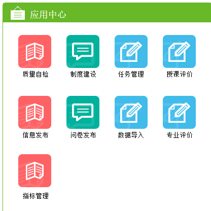
3.4.16.1. **【功能名称：质量自检】**
根据质量模型要求，自动提取与质量指标且与本部门相关数据信息，由用户根据实际业务要求进行相应的业务处理。
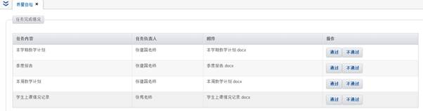
3.4.16.2. **【功能名称：制度建设】**
根据制度管理要求，自动提取与本部门相关的制度数据信息，由用户根据实际业务要求进行相应的业务处理。
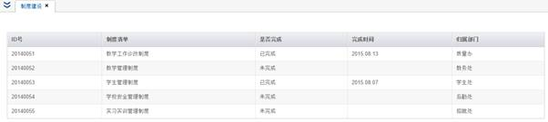
3.4.16.3. **【功能名称：任务管理】**
用户进入本功能后，可以看到全部个人待办任务，用户可以在对应的操作列中根据实际内容及业务规定进行相应的业务处理操作。界面如下图：
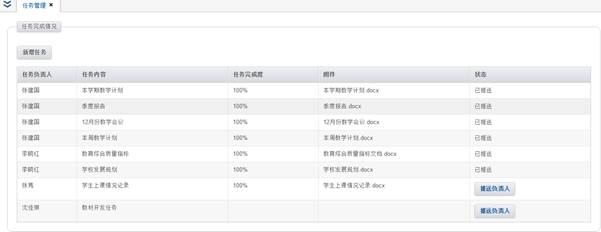
3.4.16.4. **【功能名称：授课评价】**
用户进入本功能后，把需要待评价的老师及其对应的评价表信
息展示出来，由相应负责人员如实填写评价表内容后交给系统后台完成自动评分。界面如下图：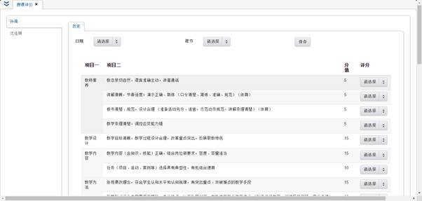
3.4.16.5. **【功能名称：信息发布】**
得到授权的用户进入本功能后，可以填写需要发布的信息和可以查看到的人员群体。界面如下图：
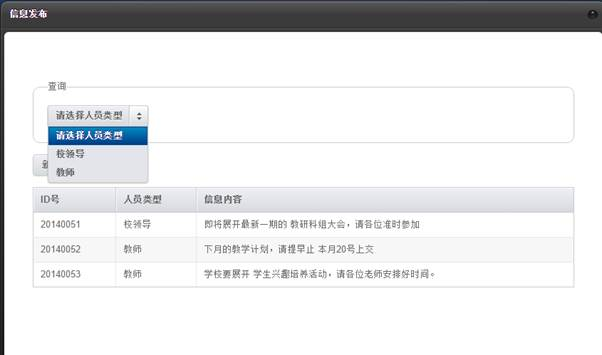
3.4.16.6. **【功能名称：问卷管理】**
得到授权的用户，可以在此模块中管理所有问卷，包括问卷的增删改查。已经制作好的问卷可以根据填写对象的不同，发布给指定用户进行填写和汇总。界面如下图：
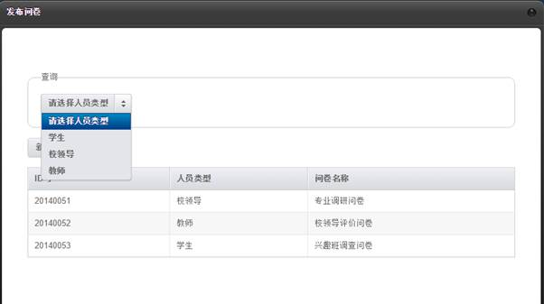
3.4.16.7. **【功能名称：数据导入】**
得到授权的用户，可以在此模块中按照数据模板格式要求，制作相应的原始数据，然后通过上传文件的形式批量导入相应数据。
3.4.16.8. **【功能名称：专业评价】**
得到授权的用户，可以在此模块中根据评价表内容填写相关信息，系统会根据填写结果自动汇总。
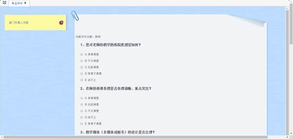
3.4.16.9. **【功能名称：指标管理】**
得到授权的用户，可在此模块中管理所有的质量指标。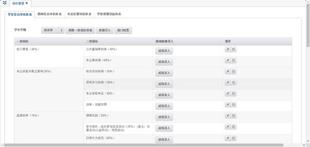
指标按照体系结构的不同划分为：
l 学生综合评价体系
l 教师综合评价体系
l 专业发展评估体系
l 学校质量效益体系
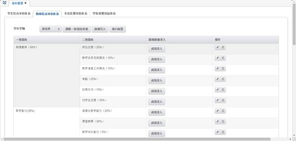
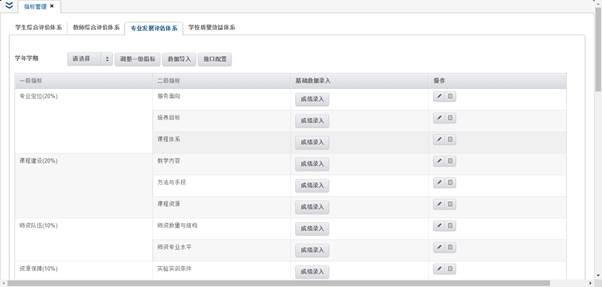
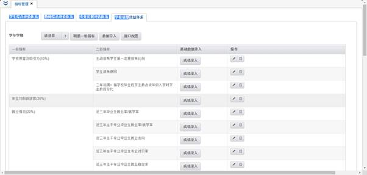